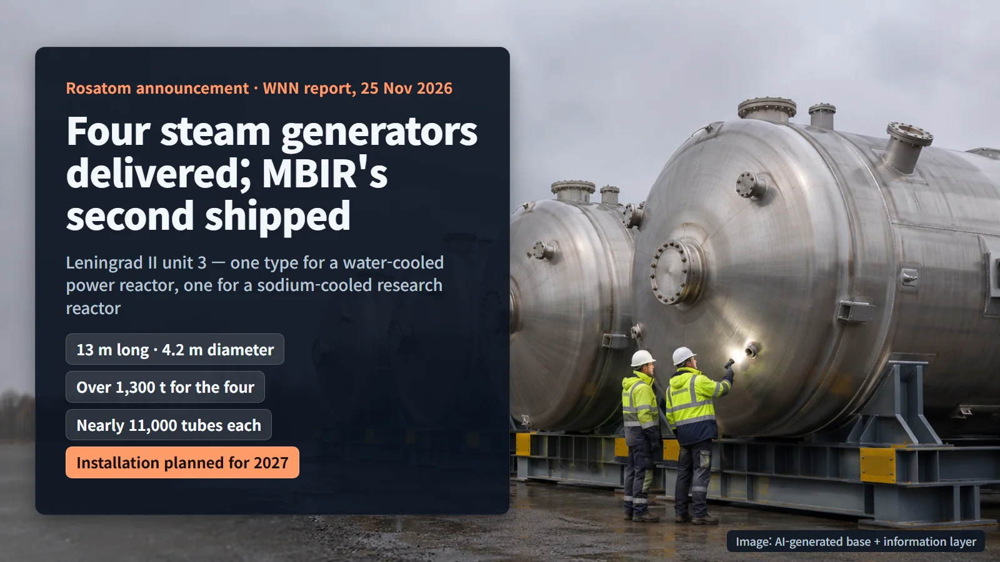
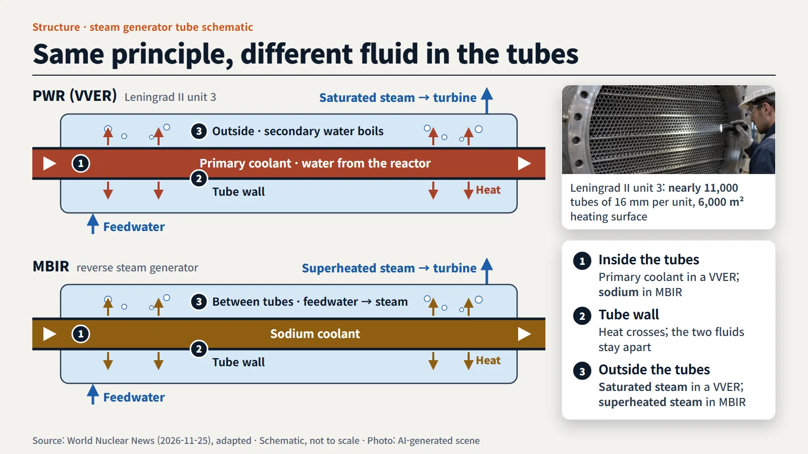
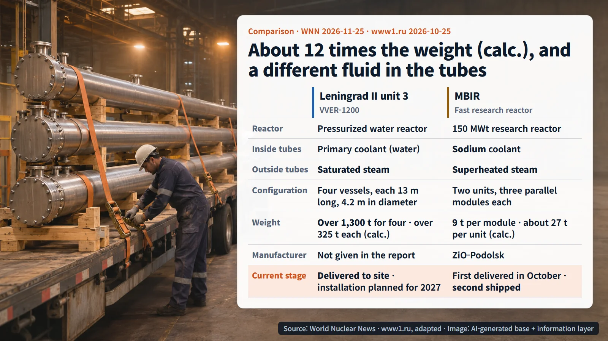
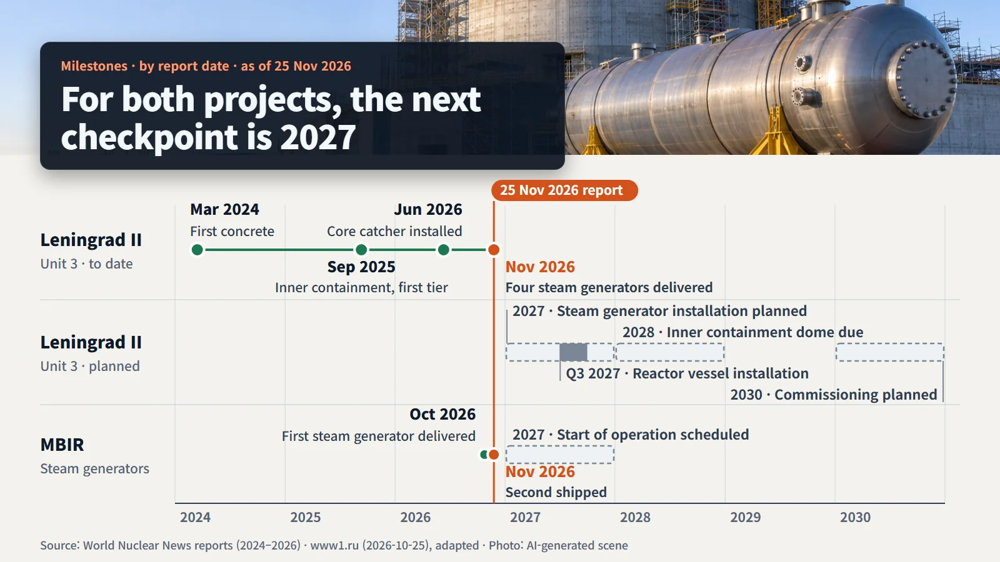

Russia · Steam generators
Four Steam Generators Reach Leningrad II Unit 3 as MBIR's Second Ships: One Name, Two Very Different Machines
What a steam generator does, and why the one for the sodium-cooled MBIR research reactor differs from a VVER's.
The arrival of steam generators at a nuclear construction site marks the shift from civil works to mechanical installation. On 25 November 2026 World Nuclear News (WNN), citing Rosatom, reported two such steps together: four steam generators have been delivered for unit 3 of Leningrad II, and the second steam generator for the Multipurpose Fast Research Reactor (MBIR) has been shipped to its construction site. They share a name but differ sharply in size and layout: one serves a large water-cooled power reactor, the other a research reactor cooled by liquid sodium.

A steam generator is the boundary where reactor heat becomes steam
Heat from a reactor core cannot drive a turbine directly. In a pressurized water reactor (PWR), primary coolant heated in the reactor flows through thin heat-exchange tubes inside the steam generator, and secondary water surrounding the tubes takes up that heat and boils. That steam drives the turbine. Russia's Water-Water Energetic Reactor (VVER) works on the same principle.
The tube wall lets heat through and keeps the two water circuits apart, so a steam generator is both a heat exchanger and the boundary between the reactor side and the turbine side. Bundling thousands of thin tubes adds wall area for heat to cross within the same volume.
Reading the four Leningrad II unit 3 vessels by the numbers
The delivered steam generators are four cylindrical vessels 13 metres long and 4.2 metres in diameter, weighing more than 1,300 tonnes in total, or more than 325 tonnes each on average (1,300 ÷ 4). Alexey Mochalov, Deputy Chief Engineer for New Power Unit Construction at Leningrad NPP-2, said each one contains nearly 11,000 heat-exchange tubes 16 millimetres in diameter, creating a heating surface of 6,000 square metres.
Treating the 6,000 square metres as the outer surface of 16-millimetre tubes, the combined tube length is 6,000 ÷ (π × 0.016), or about 119 kilometres. Divided among roughly 11,000 tubes, the average tube is about 11 metres long, inside a vessel 13 metres long.
Together the four units will produce nearly 6,500 tonnes of saturated steam per hour; saturated steam is steam at the temperature at which the water boils. Dividing 6,500 tonnes by 3,600 seconds gives about 1.8 tonnes per second. Mochalov said this is enough to drive the turbine rotor and blades, weighing 675 tonnes in total, at 1,500 rpm.
Konstantin Khudyakov, Director of the Leningrad NPP Facilities Programme at Titan-2, said eight supports, two for each steam generator, are to be built in the reactor building by spring, requiring 85 tonnes of steel reinforcement and 370 cubic metres of special concrete. He cited the weight of the steam generators and the water and steam in their circuits. The manufacturer of the Leningrad II unit 3 steam generators was not given in the report.
MBIR's "reverse" steam generator: sodium inside the tubes, water and steam outside
The second item concerns MBIR, under construction at the Research Institute of Atomic Reactors (RIAR) site at Dimitrovgrad in Russia's Ulyanovsk region. At 150 MWt (megawatts thermal), it will be the most powerful research reactor in the world. WNN reported that its steam generators are of a different design from those of standard power units such as VVERs and are called "reverse steam generators".
Svyatoslav Novikov, Deputy Head of Technology and Chief Engineer of the Facilities Construction Directorate at RIAR, described what that means: the sodium coolant flows inside the heat-exchange tubes, while feedwater is supplied and superheated steam is withdrawn from the space between the tubes. As in a PWR, the heat-carrying fluid runs inside the tubes; here it is sodium instead of water. As a general matter, sodium is a metal that reacts chemically on contact with water, so in a sodium-cooled reactor's steam generator the tube wall is the boundary separating sodium from water.

The reason given for the design choice is operating experience. The MBIR steam generators are similar in design to those of BOR-60, the experimental fast reactor that has operated at the same site since 1969. Novikov said the BOR-60 steam generator has proven itself reliable and that this positive experience was a key reason for choosing a similar design for MBIR. Each MBIR steam generator also consists of three modules, which Rosatom said minimises the space needed for installation.
On 25 October 2026 www1.ru, citing Rosatom, said the manufacturer ZiO-Podolsk had delivered the first of the two MBIR steam generators to the RIAR site. Each has three parallel modules, each weighing 9 tonnes and more than 9 metres long. Inside them feedwater is heated and evaporated, and the steam is then heated above its boiling temperature before going to the turbine; that is superheated steam.
The same criteria, side by side:
| Item | Leningrad II unit 3 (VVER-1200) | MBIR |
|---|---|---|
| Reactor | Pressurized water power reactor | 150 MWt research reactor |
| Inside the tubes | Primary coolant from the reactor | Sodium coolant |
| Outside the tubes | Secondary water boils into saturated steam | Feedwater in, superheated steam out |
| Configuration | Four cylindrical vessels, each 13 m long and 4.2 m in diameter | Two units, each with three parallel modules |
| Weight | More than 1,300 t for the four | 9 t per module |
| Manufacturer | Not given in the report | ZiO-Podolsk |
| Current stage | Delivered to site; installation planned for 2027 | First delivered in October; second shipped |
(Source: World Nuclear News, 2026-11-25, and www1.ru, 2026-10-25, adapted)
One MBIR steam generator, at three 9-tonne modules, comes to about 27 tonnes (9 × 3); against the average of more than 325 tonnes for a Leningrad II unit 3 vessel, that is a factor of about 12 (325 ÷ 27 ≈ 12). A large power reactor and a 150 MWt research reactor have very different amounts of heat to turn into steam.

What follows delivery and shipment
WNN said the four Leningrad II unit 3 steam generators have been shipped to the plant area ready for inspection and will be installed in their design positions in 2027. The unit's 2027 work programme also includes installing the reactor vessel in the third quarter and continuing work on the double containment.
The delivery fits into a longer sequence. Unit 3, the seventh unit at the plant overall, had first concrete poured in March 2024. By the dates of earlier WNN reports, the first tier of the inner containment was installed in September 2025, the 120-tonne core catcher in June 2026, and the steam generators were delivered in November 2026. The inner containment is due to be completed, with dome, in 2028, and unit 3 is planned to be commissioned in 2030. It is expected to generate power for 60 years, with a possible 20-year extension.
Site-wide, Leningrad II has two VVER-1200 units, commissioned in 2018 and 2021, with units 3 and 4 under construction. Together the four will replace the four RBMK-1000 units built in the 1970s; the RBMK (Reaktor Bolshoy Moshchnosti Kanalny) is an older graphite-moderated design that boils water in pressure tubes. The original unit 1 shut down in 2018 and unit 2 in November 2020, and the new units 3 and 4 will replace the original units 3 and 4.
For MBIR, both steam generators have been completed and the second has been shipped to the construction site. MBIR is scheduled to begin operation in 2027, replacing BOR-60, with a design life of 50 years. It is a multi-loop research reactor able to test lead, lead-bismuth and gas coolants, and runs on mixed uranium-plutonium oxide (MOX) fuel. RIAR intends to set up closed fuel cycle facilities for MBIR on site.

One name covers four 13-metre cylinders and a set of 9-tonne modules. The next checkpoint is 2027: steam generator and reactor vessel installation at Leningrad II unit 3, and the scheduled start of operation at MBIR.